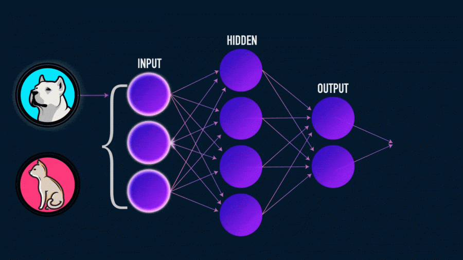
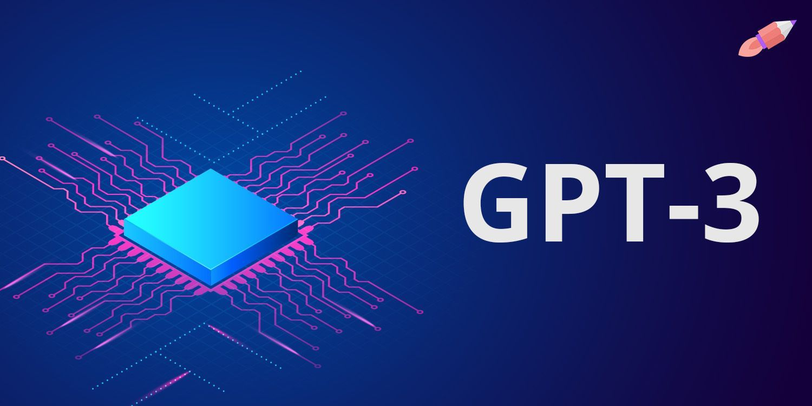
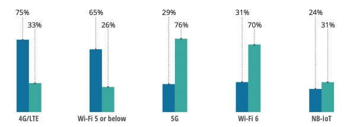
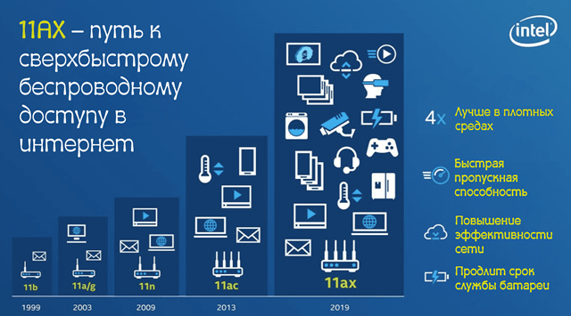
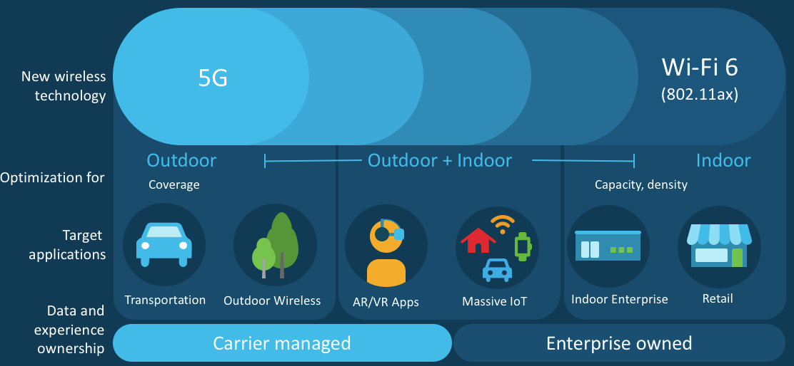
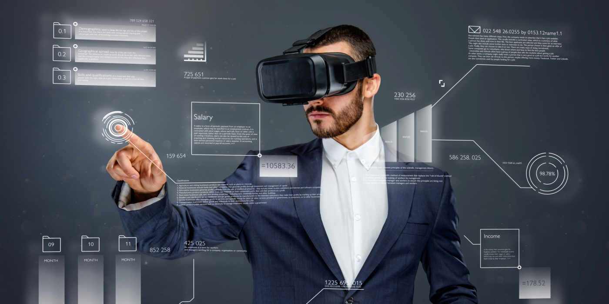
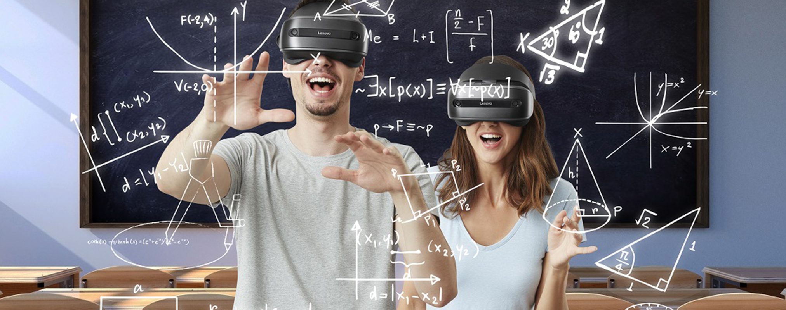
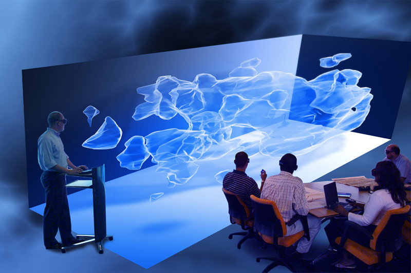

Мир новых технологий

Мир новых технологий
Цифровые технологии стали постоянным и динамичным элементом нашего мира, а сама ИКТ-отрасль будет одной из самых трансформируемых в ближайшие несколько лет. ИТ-директора должны создавать сплочённые коллективы по закупкам, разработке и операционной работе. Эти команды должны соответствовать моделям предоставления технологий по принципу "как услуга" и ориентироваться на конечный результат, в то время как основная задача ИТ-поставщиков будет состоять в помощи компаниям делиться, использовать, управлять и повышать ценность данных, - сказал вице-президент группы IDC по мировым исследованиям Рик Вилларс (Rick Villars).
На сегодняшний день самая совершенная нейросеть на базе NLP (то есть, алгоритмов распознавания текста) — GPT-3. Это нейросеть-трансформер, которая способна генерировать связные ответы в диалоге с человеком. Объем используемых ей данных и параметров в 100 раз превосходит предыдущее поколение — GPT-2.
Одно из самых перспективных направлений в развитии ИИ и нейросетей — это расширение диапазона восприятия. Сейчас алгоритмы умеют распознавать изображения, лица, отпечатки пальцев, звуки и голос. Они также умеют говорить и генерировать изображения и видео, имитируя наше восприятие разных органов чувств. Ученые MIT отмечают: чтобы приблизиться к человеку ИИ не хватает эмоционального интеллекта и чувств. В отличие от ИИ, человек умеет не только обрабатывать информацию и выдавать готовые решения, но и учитывать контекст, множество внешних и внутренних факторов, а главное — действовать в условиях неопределенности и меняющейся среды. Например, алгоритм AlphaGo от компании DeepMind способен обыграть чемпиона мира по го и шахматам, но все еще не может расширить свою стратегию за пределы доски.
 С помощью 5G многие сотрудники смогут окончательно перейти на удаленную работу, а компании — быстрее принимать решения, основываясь на аналитике потоковых данных. С 2021 по 2025 годы технология принесет экономике США до $2,7 трлн и до 16 млн рабочих мест.
Новый стандарт Wi-Fi 6 добавит новую частоту 6 ГГц к двум уже имеющимся — 2,4 и 5 ГГц. Он преследует те же цели, что и 5G: помогает ускорить интернет-соединение (до 2 Гб/сек для мобильных устройств), сделать его более стабильным и широкополосным — к одной точке можно будет подключить еще больше устройств. При этом сеть сама будет распределять интернет-трафик между устройствами, в зависимости от их мощности.
По данным The Verge, первые 316 млн мобильных устройств с поддержкой Wi-Fi 6E появятся уже в 2021 году. Ожидается, что 5G и Wi-Fi 6 будут не конкурировать, а взаимно дополнять друг друга — в зависимости от задач и типов устройств.
  По данным Statista, рынок AR и VR в 2020 году оценивался в $18,8 млрд. Это в три раза больше, чем в 2016-м. Аналитики PwC в 2019 году прогнозировали, что число сотрудников, использующих VR и AR в своей работе, вырастет с 500 тыс. до 23 млн к 2030 году.
Сегодня эти технологии используют в здравоохранении — чтобы обучать хирургов или проводить операции с данными диагностики в виде голограмм и онлайн-консилиумом врачей. В начале февраля 2021 года Microsoft провела онлайн-трансляцию 12 операций, выполненных в MR — смешанной реальности. Хирурги из 13 стран смогли подключиться в режиме онлайн и видеть все данные диагностики в виде голограмм и консультировать друг друга.
В образовании дополненная и виртуальная реальность помогают глубже вовлечь в процесс и в деталях смоделировать среду, которую изучают в классе. Технологию используют и в корпоративном обучении. Tyson Foods — международная корпорация по производству продуктов питания — применяет VR, чтобы обучать сотрудников технике безопасности на производстве. В результате производственных травм стало на 20% меньше.
  